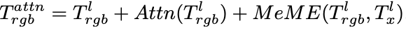
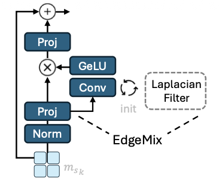
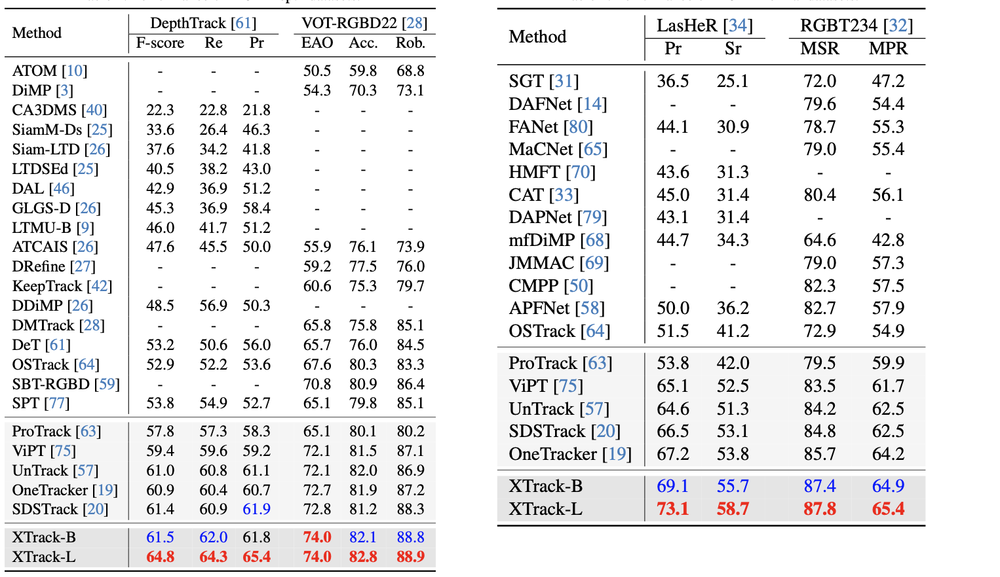

<div class="middle center"> <div style="width: 100%"> # 学习汇报 <hr> [王倓](https://github.com/Mandorian) 2025.12.07 </div> </div> <!--s--> <div class="middle center"> <div style="width: 100%"> # XTrack: Multimodal Training Boosts RGB-X Video Object Trackers </div> </div> <!--v--> ## 动机 + 多模态感知在视觉追踪领域已展现出重要价值，不同传感器类型在处理特定复杂场景时各具优势。虽然能够融合所有模态的通用模型最为理想，但数据稀疏性制约了其发展,实际应用中通常仅能获取单一模态数据。 因此，确保多模态感知中获得的知识在推理时能有效共享至关重要 + 现有追踪方法通常分别处理每种模态，每次仅解决一个与外观相关的挑战。推理过程中仅根据输入类型的先验知识激活特定模态分支，限制了跨模态融合的潜力。 <img src='./lec5/motivation.png' width=45% style='display: block; margin: 0 auto;'> <!--v--> ## 创新点 + 提出了第一个在RGB-X视频对象跟踪中实现跨模态知识共享的系统方法，不同模态的相似样本可以共享更多的特征。当特征相似性在模态之间造成混淆时，这种“混淆”标志着知识共享的最佳机会。使用“弱”分类器，来识别这种知识共享的机会。 + 设计了一个混合模态专家（MeME）将MoE稀疏架构与模态特定处理相结合。通过一个软路由器，最初为一种模态训练的专家可以在其特征充分一致时被另一种模态利用。 <!--v--> ## 模型架构 其核心是在冻结的RGB基础追踪器的每个Transformer块中插入一个MeME模块。该模块位于注意力块和FNN块之间。 把模版和搜索区域以及对应的多模态patches，分别输入到同一个patch embeding中。得到$T_{rgb}$和$T_x$。对于第$l^{th}$个Transformer块，通过合并$T^l_{rgb}$和$T^l_x$特征，并经过注意力块进行建模得到：  \ <img src='./lec5/eq2.png' width=50% style='display: block; margin: 0 auto;'> <img src='./lec5/MeME.png' width=80% style='display: block; margin: 0 auto;'> <!--s--> <div class="middle center"> <div style="width: 100%"> # 模态混合专家（MeME） </div> </div> <!--v--> ## 核心原理 + 通过一个“弱”路由分类器，动态识别跨模态特征相似性，并将这种特征“混淆”转化为跨模态知识共享的机会。 + 当模型难以区分一个样本属于哪种模态时，恰恰说明该样本在不同模态间具有高度相似的特征，这正是跨模态知识迁移的最佳时机。 + 根据输入模态分配最合适和最专业的专家，动态软路由决定将其分配给本模态专家、其他模态专家还是共享专家。 <!--v--> ## “弱”分类器 它的目标是主动发现跨模态特征相似性，并将其转化为知识共享的渠道。在结构上它本质是一个线性层+Softmax，输入的是特征，输出的是概率分布，表示该特征应该交给哪个专家进行处理。通过分类损失和平衡损失引导它能够大致分类准确（80%），并且能够均衡的使用所有专家，鼓励在不确定时调用其他模态的专家。 <img src='./lec5/loss.png' width=30% style='display: block; margin: 0 auto;'> + $\lambda$值很大：平衡损失主导，路由器倾向于均衡分配，导致分类准确率下降。 + $\lambda$值很小：分类损失主导，路由器倾向于严格分类，准确率上升。 <img src='./lec5/prob.png' width=80% style='display: block; margin: 0 auto;'> <!--v--> ## 共享专家 XTrack中的共享专家是一个经过特殊设计的轻量级前馈网络，其核心是一个在低维潜在空间中操作的、以拉普拉斯边缘检测滤波器初始化的可学习卷积模块（Edge-Gated模块）。引导共享专家从捕捉跨模态共有的高频边缘特征入手。在训练中，它不依赖分类损失进行专业化，而是通过平衡损失的强制约束，确保其必须处理来自所有模态的、足量的混合数据流。这种设计使其能不受特定模态限制，专注于从多源数据中蒸馏出对下游跟踪任务最有效的通用特征表示，从而充当了一个隐式的跨模态特征对齐与融合器。  <!--s--> <div class="middle center"> <div style="width: 100%"> # 结果 </div> </div> <!--v-->  <img src='./lec5/result2.png' width=29% style='display: block; margin: 0 auto;'>